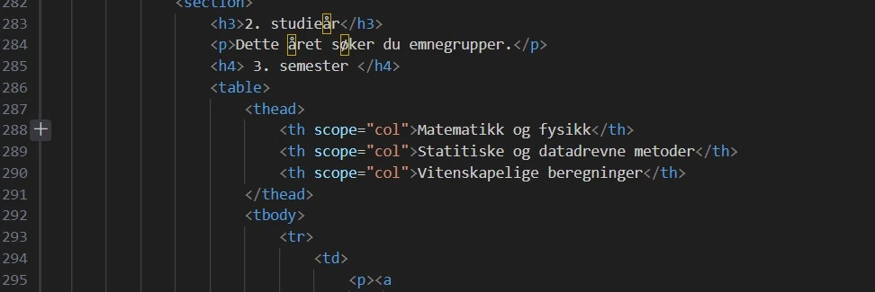
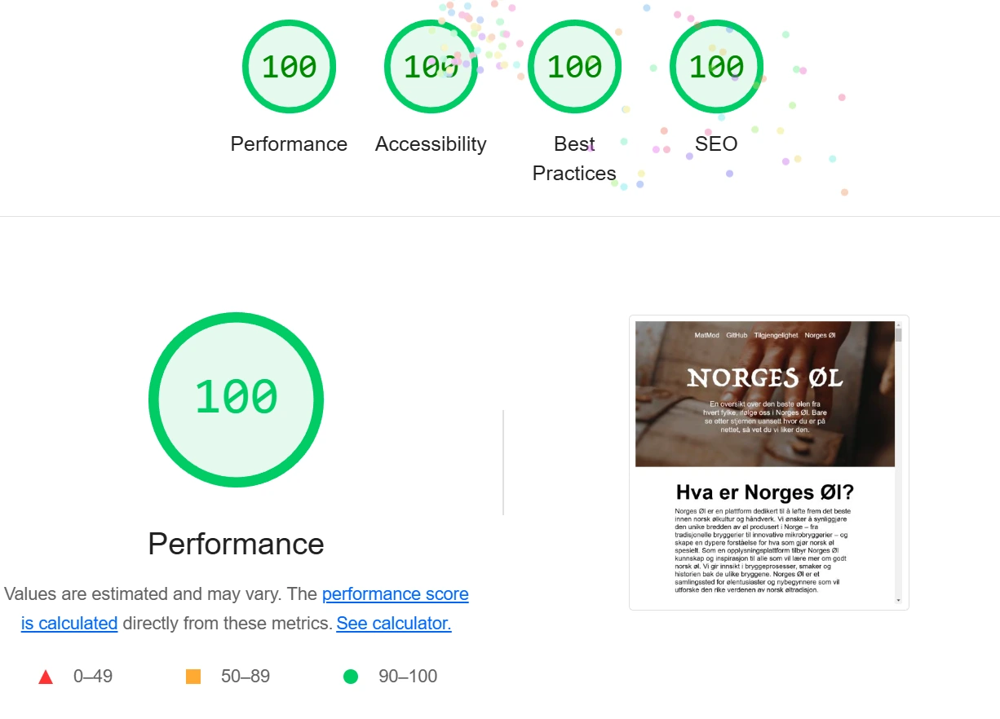
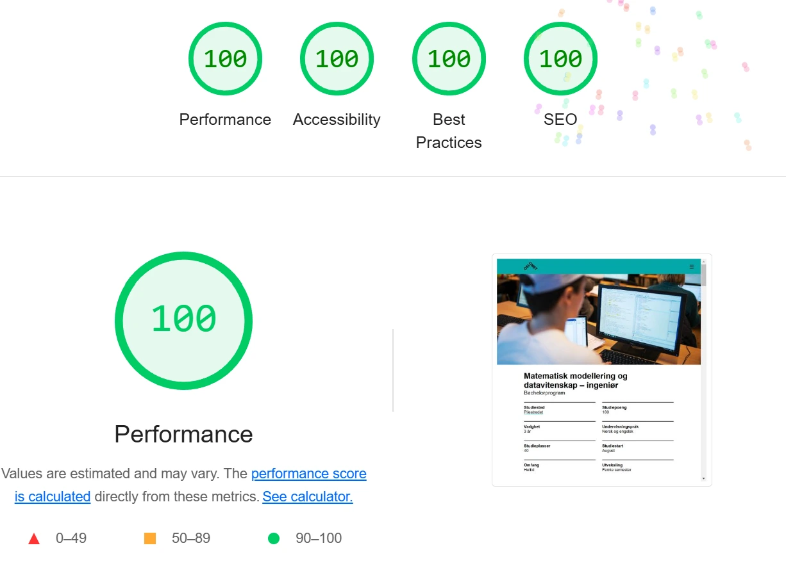
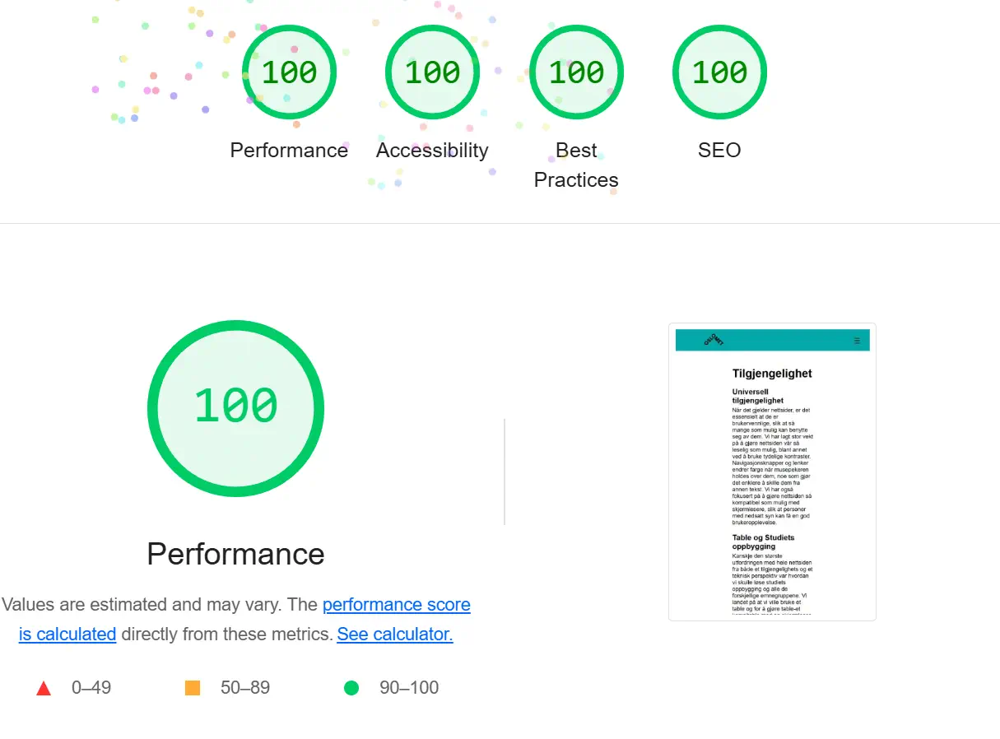
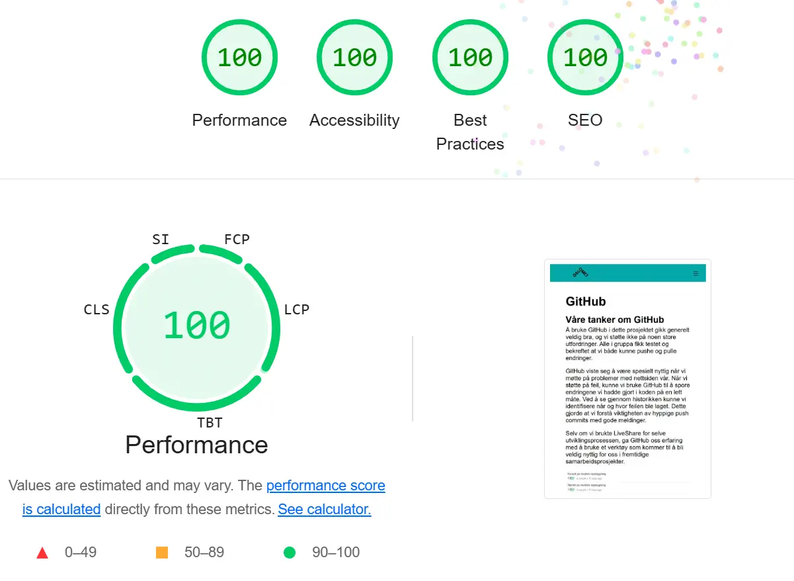

Tilgjengelighet
Universell tilgjengelighet
For å sikre at nettsiden vår er brukervennlig og tilgjengelig for et bredt spekter av brukere, har vi lagt betydelig vekt på lesbarhet og universell utforming. Blant tiltakene er bruk av tydelige kontraster for å forbedre lesbarheten. Navigasjonsknapper og lenker har fått en dynamisk funksjonalitet som innebærer at de endrer farge ved musepekerens berøring, noe som gjør dem lettere å identifisere som interaktive elementer. Videre har vi optimalisert nettsiden for kompatibilitet med skjermlesere, slik at personer med nedsatt syn kan oppleve nettstedet som brukervennlig.
For å gjøre at nettsiden skal være tilgjengelig på ulike platformer og skjermstørrelser er nettsidene kodet slik at de skalerer basert på skjermens bredde. På denne måten kan vi sikre at tekst ikke blir for lite på små flater, og at bilder tar unødvendig stor plass der de ikke trenger. Fonter og farger er valgt slika at kontraster er synlige og teksten er lesevennlig.
Table og studiets oppbygging
En av de største utfordringene fra både et teknisk og tilgjengelighetsperspektiv har vært å strukturere informasjonen om studiets oppbygging og de ulike emnegruppene. Vi valgte å bruke tabeller som rammeverk og anvendte scope-attributtet på tabellens th-elementer for å forbedre skjermleserens tolkning av tabellstrukturen. For å øke lesbarheten ble hver emnegruppe plassert i sin egen kolonne, noe som gjorde det lettere for brukerne å få en oversikt. Vi vurderer at denne løsningen har resultert i en mer intuitiv og forståelig presentasjon av studiets struktur.
NAV-baren
Navigasjonsbaren har vært en prioritert komponent i utviklingsprosessen. For å gjøre den både synlig og enkel å bruke, er den plassert øverst på siden og utstyrt med en distinkt farge for å gjøre den lett gjenkjennelig. For å sikre god brukervennlighet på mobile enheter, har vi implementert en hamburger-meny. Denne løsningen gjør navigasjonen mer ryddig på mindre skjermer og tilpasser seg brukere som foretrekker å minimere nettleservinduet.
Automatiserte tester
Gjennom hele utviklingsprosessen har vi benyttet automatiserte tester for å identifisere og forbedre brukervennligheten. Feedback fra testbrukere har vært svært verdifull, og et konkret eksempel er justeringen av avstanden mellom lenker i mobilvisning. Dette tiltaket gjør det enklere å trykke på lenker når man navigerer med fingrene. Etter omfattende arbeid med å forbedre brukeropplevelsen har nettsiden oppnådd gode resultater på Lighthouse-analyser (se resultatene nedenfor).
Bilde 1:
Dette bilde viser koden som vi har brukt for at en skjermleser skal klare å lese table-et.
Bilde 2:
Dette bilde viser koden som vi har brukt for at linkene lyser opp i NAV-baren.

Bilde 3:
Dette bilde viser lighthouse rapporten av Norges-Øl/Activity siden.
Bilde 4:
Dette bilde viser lighthouse rapporten av MatMod siden.
Bilde 5:
Dette bilde viser lighthouse rapporten av tilgjengelighet siden.
Bilde 6:
Dette bilde viser lighthouse rapporten av github siden.
